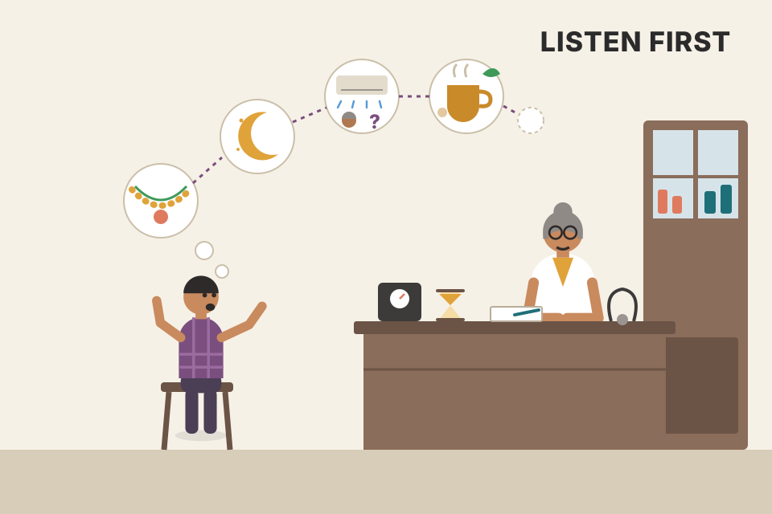
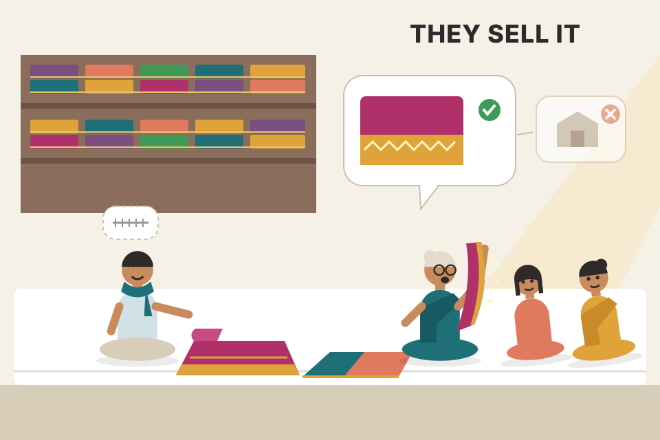
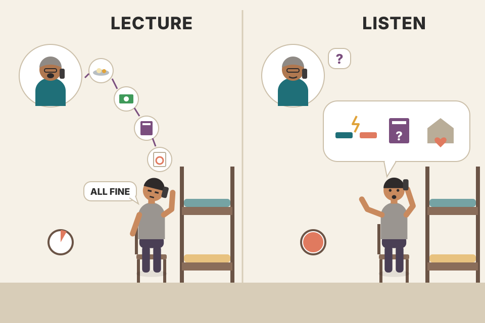
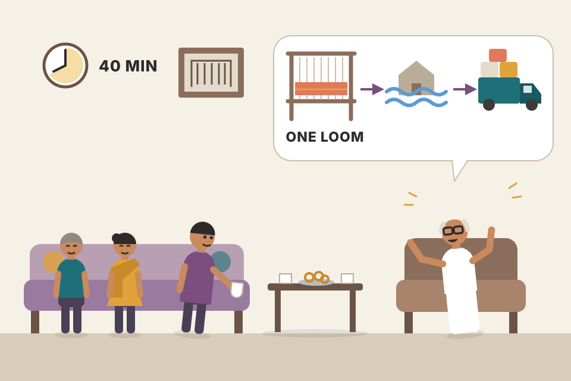
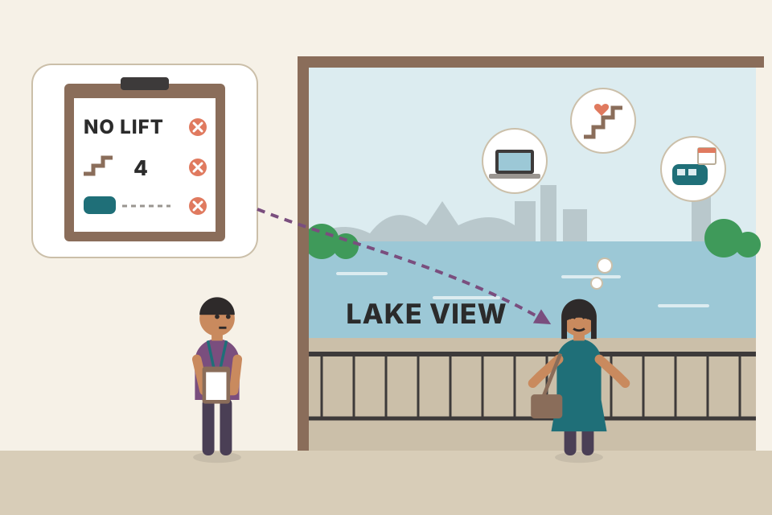
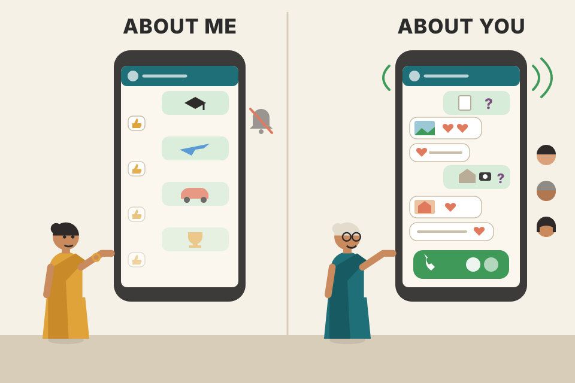
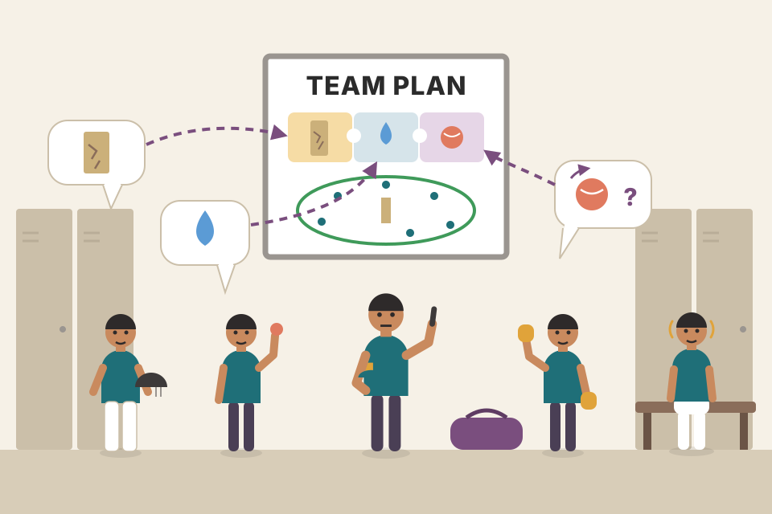

DALE CARNEGIE · HOW TO WIN FRIENDS · PART THREE · CHAPTER 6 · PDF p161–165
The Safety Valve in Handling Complaints
When you want someone to come round to your view, stop talking. Let them say everything on their mind first. People who are still full of their own ideas cannot hear yours.
This is one of the shortest chapters in the book: five pages, five stories, one principle. Carnegie's claim is that most of us, when we try to persuade, talk far too much. The other person knows their own business and problems better than we do, and while their own thoughts are still waiting to be said, they are not listening to us. So ask questions, don't interrupt even when you disagree, and let them talk themselves out. The proof comes from a salesman who won the biggest order of his life because laryngitis stopped him from speaking, a mother who finally heard her teenage daughter, a job seeker who let a founder tell his life story, a manager who let a candidate talk himself into a job, and a recruiter who made friends at work by boasting less and listening more.
Principle 6 of Part Three
Let the other person do a great deal of the talking.
How the chapter fits together
pdf p161–165 · read this first
Where it sits. This is the sixth of the twelve chapters of Part Three, "How to Win People to Your Way of Thinking". The Part so far: avoid arguments (Ch.10), never tell people they are wrong (Ch.11), admit your own mistakes fast (Ch.12), begin in a friendly way (Ch.13), and get early "yes" answers (Ch.14). This chapter adds: stop talking and let them talk. The very next chapter (Ch.16) takes the step after that: let them feel the idea is their own, which the Bradley story here already hints at.
How is this different from "be a good listener"? Part Two already had listening (Ch.7), as a way to make people like you. Here listening is a way to persuade. The mechanism is different: a person whose head is full of their own unspoken ideas has no room for yours. Let the pressure out first, and only then is there space for your point. The salesman, the job seeker and the manager in this chapter all got a yes; they got it by talking less.
The argument as a chain.
Problemwe try to persuade→we do most of the talking
Why it failsthey know their business bettertheir own ideas are "crying" to come out→they don't hear us
Insteadask questionsdon't interrupt, even when you disagreelisten patiently, openly, sincerely
BusinessG.B.R. loses his voice → $1.6M contract
FamilyBarbara Wilson stops lecturing → Laurie opens up
HiringCubellis lets the founder talk → hiredBradley lets Pryor talk → he sells himself the job
FriendsLa Rochefoucauld: let friends excel youHenrietta stops boasting → liked
PrincipleLet the other person do a great deal of the talking
About the title: a safety valve lets steam out of a boiler before the pressure does damage. Carnegie never explains the phrase, and despite the word "complaints" none of the five stories is about a complaint as such. Our reading: whatever the person brings you (an objection, a grievance, a doubt, a life story), letting it all out is the valve. After that, they can listen. The book's real complaint stories, the department-store coat and the furious telephone customer who calmed down after being heard for hours, are in the Part Two listening chapter (Ch.7); this chapter turns the same valve into a persuasion tool.
01 · THE IDEA
Let them talk themselves out
pdf p161
Carnegie opens without a story. In a few lines he makes the whole argument, and each sentence is a separate instruction:
Notice the habit. Most people who try to bring others round to their way of thinking do too much of the talking themselves.
Let the other person talk themselves out. Not a sentence or two: until they have said what they came to say.
Remember who the expert is. They know more about their own business and their own problems than you do.
So ask questions, and let them tell you a few things.
Don't interrupt, even when you disagree. You will be tempted to. Carnegie calls it dangerous, because while people still have a lot of their own ideas pressing to come out, they will not pay attention to you.
Listen the right way: patiently, with an open mind, and sincerely (not as a tactic you are waiting to finish).
Encourage them to express their ideas fully.
Then he asks the practical question: does this actually pay off in business? The rest of the chapter is his answer, starting with a salesman who was forced to try it.
Picture it

A good family doctor in a small neighbourhood clinic does not cut you off after your first sentence. She lets you tell the whole saga: the cough started after the wedding, it is worse at night, your mother thinks it is the AC, you already tried the ginger-tulsi kadha. Only then does she speak, and because you have said everything, you actually listen to her advice instead of waiting to add the part about the AC.
Where it breaks: the patient came to the doctor wanting advice. The people Carnegie has in mind (a buyer, a sceptical boss, a teenager) often did not ask for your view at all, and they will hold on to their own ideas harder. That makes letting them talk first even more necessary, not less.
What's happening behind it
The book's explanation: attention is limited. A person who still has ideas "crying for expression" is busy holding them, rehearsing them and waiting for a gap to say them. Anything you say in that state is noise. Once they have talked themselves out, the attention is free. Also, they really do know their own situation better, so questions get you information you could not have guessed.
Beyond the book: two lines of later research fit this. Diana Tamir and Jason Mitchell (Harvard, 2012) found that talking about yourself activates the brain's reward circuits, and people in their study gave up small amounts of money to answer questions about themselves rather than about others. And studies of "high-quality listening" by Guy Itzchakov and Avraham Kluger found that speakers who felt really listened to became less defensive and held more nuanced, less extreme views afterwards. Listening does not just please people; it loosens their grip on their position.
At work
A teammate brings a design you think is wrong. The reflex is to object at slide two. Carnegie's version: "Walk me through the whole thing first; I'll hold my questions." Then ask about each choice ("What made you pick polling over webhooks?"). Half the time there is a constraint you did not know (the partner API has no webhooks). The other half, by the time they have explained everything, they have often spotted the weak point themselves, and your one remaining concern lands on a mind with room for it.
In 1:1s with your reports the same rule applies with more force: it is their meeting. If you talk for 40 of the 45 minutes, you learn nothing about what is actually blocking them.
Interview angle. "Tell me about a time you persuaded someone who disagreed with you." A strong answer does not start with your brilliant argument. It starts with what you learned by asking: "I first asked her to walk me through why she preferred X; it turned out her real worry was on-call load, so I addressed that."
Worked example: proposing a database migration to a sceptical lead
Talk first
"So I've been looking at this and Postgres is clearly the right call. Mongo is costing us, the joins are a mess, I've benchmarked it, here are twelve slides, and the migration is only about three weeks…"
Ten minutes of pitch. The lead spends it composing objections (the last migration overran, the team doesn't know Postgres) and then delivers them. Now it is an argument (Ch.10).
Let them talk
"Before I show you anything: what's the most painful thing about the current data layer for you? And what worried you most about the last migration?"
The lead talks for ten minutes. You learn their two real fears and can shape the proposal around them (a phased cutover, a Postgres pairing week). When you do present, they are listening.
Self-audit: your last important conversation
Think of the last time you tried to convince someone of something (a design review, a 1:1, a client call, a family decision). Set the slider, then tick what happened.
Why interrupting to correct them turns into a fight: Ch.10 and Ch.11.
02 · BUSINESS
The salesman who lost his voice and won the biggest order of his life
pdf p161–162
a top US car makera year's upholstery fabric3 competing suppliers500,000+ yards$1,600,000
The setup. One of the largest automobile manufacturers in the United States was choosing who would supply a full year of upholstery fabric for its cars. Three big textile makers had each fitted their fabric into sample car bodies, and the motor company's executives had inspected all three. Each supplier was told that on a set day its representative would get one last chance to make the case for the contract.
The problem. The representative for one of them, whom Carnegie identifies only as G.B.R., arrived in town with severe laryngitis. When his turn came he could barely whisper. He was shown into a room with four people round a table: the textile engineer, the purchasing agent, the director of sales and the company's president. He stood up, tried to speak, and managed only a squeak.
What he did. He wrote a note on a pad and passed it over:
"Gentlemen, I have lost my voice. I am speechless."G.B.R.'s note, as he told it to Carnegie's class (pdf p161)
What happened. The president said he would do the talking for him, and he did. He showed G.B.R.'s samples and praised their strong points. A lively discussion of the fabric's merits started round the table, and because the president was speaking on the salesman's behalf, he took the salesman's side in it. G.B.R.'s whole contribution was smiling, nodding and a few gestures.
The result. He won the contract: more than half a million yards of upholstery fabric, worth $1,600,000 in total, the largest order he had ever received.
His own verdict. He told the class he was sure he would have lost the contract if he had not lost his voice, because he had been going about the whole thing the wrong way. He found out by accident how well it can pay to let the other person do the talking.
Dated wording. "Gentlemen" and an all-male table of executives reflect the 1930s boardroom. Today the note would start "Sorry, everyone" and the room would (one hopes) be mixed. The lesson does not depend on either.
Step through the story
Picture it

A silk-saree seller in Kanchipuram has a sore throat and cannot do his usual patter. He just unfolds sarees on the white sheet and smiles. The customer's aunt picks one up, holds it to the light, and starts telling everyone why this zari is better than the one at the shop down the road. Within ten minutes the family has convinced itself, more firmly than any sales talk could have done.
Where it breaks: the saree, like G.B.R.'s fabric, was already good. Silence did not create the quality; it let the buyers discover it in their own words. Keep quiet about a poor product and they will talk themselves out of it just as fast.
What's happening behind it
The book's explanation: G.B.R. had the wrong idea about selling, which was that his job was to talk. Losing his voice forced the other side to do the talking, and the person who argued for his fabric was the most powerful person in the room.
Beyond the book: psychologists call this self-persuasion (Elliot Aronson wrote about it at length). Arguments we make ourselves stick far better than arguments made to us, because we trust our own reasoning and feel we own the conclusion. A buyer who has just praised your product in front of colleagues has also made a public commitment, and people like to stay consistent with what they have said aloud (Robert Cialdini's "commitment and consistency"). The president was not just persuaded; he had become the advocate.
At work
The engineering version of G.B.R. is the demo where you hand over the keyboard. Instead of a 30-minute scripted walkthrough of your internal tool, give the client or the other team a real task and let them click. They will narrate what they like ("Oh, it already shows the retry count") and that narration, said to their own colleagues, is worth more than your slides. The same in a code review of your own PR: "What would you have done here?" often gets the reviewer arguing for your approach.
Interview angle. In a system-design interview, the candidates who do best often get the interviewer talking early: "What scale are you imagining? What has hurt you most in a system like this?" The interviewer starts describing the problem they care about, and your design is then shaped round it.
Worked example: the final vendor pitch
The usual pitch
"Let me walk you through our platform. We have 40 integrations, SOC 2, 99.95% uptime, and here's our roadmap for the next four quarters…"
The buyer has heard three of these today. They are thinking about the one feature they care about, waiting for you to get to it.
The G.B.R. pitch
"You've seen all three of us now. Before I add anything, what stood out to you in our trial, good or bad?"
They tell you, in front of each other, what they liked. You answer only the doubts they raised.
Getting early agreement before your main point: Ch.14.
03 · FAMILY
"Why, Laurie, why?": a mother who finally stopped talking
pdf p162
Carnegie says the same rule works in families as well as in business, and gives one story from a student in his course.
mother and teenage daughterlectures, threats, punishments: none workedone tired question
The situation.Barbara Wilson's relationship with her daughter Laurie was getting worse fast. Laurie had been a quiet, easy-going child and had turned into an uncooperative, sometimes hostile teenager. Mrs Wilson had tried lecturing her, threatening her and punishing her. Nothing worked.
The moment. One day Laurie went off to see a friend without finishing her chores. When she came home, her mother was about to shout at her for what felt like the ten-thousandth time, and found she simply did not have the energy. She just looked at her daughter and asked, sadly:
"Why, Laurie, why?"Barbara Wilson, as she told it to Carnegie's class (pdf p162)
What Laurie did. Laurie saw the state her mother was in and asked, calmly, whether she really wanted to know. Her mother nodded. Laurie began hesitantly, and then everything poured out: her mother never listened to her. She was always giving orders. Whenever Laurie tried to share her thoughts, feelings or ideas, her mother cut in with more instructions.
What the mother realised. Laurie did not need a bossy parent. She needed someone to confide in, a place to take all her confusion about growing up. And all her mother had been doing was talking when she should have been listening. In her own words to the class, she had never really heard her daughter.
The outcome. From then on Mrs Wilson let Laurie talk as much as she wanted. Laurie told her what was on her mind, the relationship improved enormously, and Laurie became cooperative again.
Notice two details. First, the turning point was not a technique. It was exhaustion: the mother had no energy left to lecture, so for once she asked a question and waited. Second, Laurie checked whether her mother really wanted to know before answering. That is Carnegie's instruction to be sincere, from plate 1, tested in real life. A question asked as a trap would have got nothing.
Dated wording. The book's "bossy mother" and "girl friend" are of their time; today we would say a controlling parent and a friend. The dynamic applies to any parent or carer with a child of any gender.
Picture it

A first-year engineering student in a hostel in Pune gets the Sunday call from home. Every week it is the same list from the other end: eat properly, don't waste money, study, why are your marks low. So the student's answers shrink to "haan, all fine" and the calls get shorter. The week the parent says "you sound tired, what's really going on?" and then stays quiet, the call runs an hour: the roommate trouble, the subject that makes no sense, the homesickness.
Where it breaks: the hostel student is far away and the call is a natural opening. Laurie lived in the same house, where lectures came at every turn, so the mother had to choose to stop. And in the hostel picture the parent asks on purpose; Barbara Wilson stumbled into it out of tiredness.
What's happening behind it
The book's explanation: orders, lectures and interruptions told Laurie that her thoughts did not matter. Uncooperative behaviour was her answer. Once her mother listened, Laurie had what she actually needed (someone to confide in), so she no longer had a reason to resist.
Beyond the book: teenagers are wired to push for autonomy, and psychologists describe reactance: when people feel their freedom is being squeezed, they resist the pressure itself, regardless of what is being asked. More orders produce more resistance. Parenting books such as Adele Faber and Elaine Mazlish's How to Talk So Kids Will Listen and Listen So Kids Will Talk (1980) build a whole method on Mrs Wilson's discovery: acknowledge the feeling first, and cooperation tends to follow.
At work
The workplace Laurie is the engineer who used to be easy to work with and is now curt in stand-ups, pushes back on every ticket, and is "not a team player". The lead's reflex is the Wilson sequence: remind (lecture), mention the performance review (threaten), take away the interesting work (punish). The chapter's alternative, in a private 1:1: "You don't seem yourself the last few weeks. What's going on?" Then the hard part: be quiet, and do not jump in with solutions or corrections when it starts coming out. It is often something you could not have guessed (a reorg rumour, a promotion they feel was unfair, trouble at home).
Interview angle. "Tell me about a time a team member's performance or attitude dropped." Strong answers describe a conversation where you mostly asked and listened, what you learned that surprised you, and what changed afterwards. Weak answers are all about the warnings you gave.
Worked example: chores not done, again
The ten-thousandth lecture
"How many times do I have to tell you? You went out again without doing your work. You're grounded this weekend, and I don't want to hear any excuses."
"No excuses" means "I don't want to hear you." Expect a slammed door.
The Wilson question
"I don't want to fight about this again. Help me understand: what's going on with you lately?"
Then listen to the whole answer without correcting it. The chores can be settled later, and usually more easily.
Reflect, then reveal
Think of one person who has become difficult with you recently: a child, a sibling, a report, a colleague. Write the things you have been saying to them about it. Nobody sees this; it is not saved anywhere.
Connects to
The parent's habit of constant correction: "Father Forgets" in Ch.1.
New York · financial-page adfounded 28 years earlierstarted with $45012–16-hour dayshired after a brief check
The job. A large advertisement on the financial page of a New York newspaper asked for someone with unusual ability and experience. Applicants replied to a box number, so they did not even know who the employer was at first. Charles T. Cubellis replied, and a few days later a letter invited him to an interview.
The preparation. Before going, he spent hours around Wall Street finding out everything he could about the man who had founded the business.
The opening. In the interview he said he would be proud to work for an organisation with a record like theirs, and asked whether it was true that the founder had started twenty-eight years earlier with nothing but some desk space and a single stenographer.
What followed. Carnegie notes that nearly every successful person enjoys remembering their early struggles, and this man was no exception. He talked for a long time: how he had begun with $450 in cash and an original idea; how he fought off discouragement and ridicule; how he worked Sundays and holidays, twelve to sixteen hours a day; how he won against the odds, until the most important executives on Wall Street came to him for information and guidance. He was proud of that record, Carnegie says, and had every right to be. He thoroughly enjoyed telling it.
The result. At the end he asked Cubellis only a few brief questions about his experience, then called in one of his vice presidents and said:
"I think this is the person we are looking for."The founder, as reported by Carnegie (pdf p163)
Carnegie's analysis, in three moves.
1. He did his homework
He took the trouble to find out what the employer had achieved before walking in.
2. He showed interest
His opening was about the other person and his problems, not about himself.
3. He let the other man talk
He encouraged the founder to do most of the talking, and that is what made the good impression.
Dated details. A "stenographer" took dictation and typed; today it would be the first hire or a co-founder. A box-number advert is like an anonymous job post. "Spending hours on Wall Street" is now an evening with the company's site, engineering blog, the founder's talks and interviews, and LinkedIn.
Picture it

A young man goes with his parents to meet a prospective bride's family. He has heard that her grandfather built the family's textile business from a single handloom in the 1970s. So, over tea and murukku, he asks: "Is it true you started with just one loom?" The grandfather lights up and talks for forty minutes about the early years, the floods, the first big order from Surat. On the way out he tells the family, "Good boy, very sensible."
Where it breaks: the grandfather's verdict rests on one pleasant hour, and families (like employers) also need to check the facts. In the book, too, the founder still asked Cubellis about his experience; the listening won the impression, but he presumably had the qualifications the advert asked for. Interest opens the door; it does not replace being right for the job.
What's happening behind it
The book's explanation: people love talking about their early struggles, and a listener who invites it and enjoys it is remembered warmly. Cubellis made the founder feel important and interesting, and the founder transferred that good feeling to him.
Beyond the book: Karen Huang and colleagues at Harvard (2017) found that people who ask more questions, especially follow-up questions, are liked more; in speed-dating data, people who asked more follow-ups got more second dates. But be careful how you use this today: many companies now use structured interviews (the same questions and scoring rubric for every candidate) precisely because research showed unstructured, rapport-driven interviews predict job performance poorly. In those settings rapport helps less, and you need clear answers to the rubric questions as well. The Cubellis move still fits the open parts: the first minutes, "do you have any questions for us?", and conversations with hiring managers and founders.
At work
The same move works when you join a new team and want to change something. Before proposing a rewrite of the billing service, ask the people who built it: "How did this end up as three services? What was the original problem?" You will hear the history (and often the reasons behind odd-looking choices). People who feel their past work was understood are far more open to changing it. Leading with "this code is a mess" is the opposite of the Cubellis opening.
Interview angle. Research the interviewer's team and product (blog posts, talks, the founder's story) and ask one specific question about it, in the first minutes or at "any questions for us?". "I read that the search team rebuilt indexing in 2023. What drove that?" gets an engineer talking about work they are proud of. Then listen properly, and ask a follow-up.
Rewrite it
Pick an opening, decide how you would rewrite it, then reveal a Cubellis-style version and what changed.
Roy Bradley lets a candidate talk himself into the job
pdf p163–164
Carnegie says Roy G. Bradley had "the opposite problem" to Cubellis. Cubellis was the candidate who listened; Bradley was the employer who listened, and a good candidate sold the job to himself.
Sacramento, Californiasmall brokerage firmno health cover, no pensionno leads, no advertisingone benefit: self-employed
A hard job to sell. Bradley's firm was small. It offered no fringe benefits: no hospital cover, no medical insurance, no pension. Every sales representative was an independent agent. The firm did not even supply leads, because unlike its bigger competitors it could not afford to advertise for prospects.
The candidate.Richard (Dick) Pryor had exactly the experience Bradley wanted. He was interviewed first by Bradley's assistant, who told him all the downsides of the job. He walked into Bradley's office looking a little discouraged.
What Bradley did. He mentioned the one real advantage of working with the firm: as an independent contractor, Pryor would in effect be self-employed. Then he let Pryor talk.
What happened. As Pryor talked about the advantages of being his own boss, he talked himself out of each of the doubts he had come in with. At times he seemed to be half talking to himself, thinking each point through aloud. Bradley was tempted several times to add to what Pryor was saying, and held back. By the end of the interview Bradley felt Pryor had convinced himself, very much on his own, that he wanted to join.
Bradley's reflection. Because he listened and let Pryor do most of the talking, Pryor could weigh both sides fairly in his own mind and reach a positive conclusion that was, in Bradley's phrase, a challenge he had set for himself. They hired him, and he became an outstanding representative.
The order of events matters. All the negatives were put on the table first, honestly, by the assistant. Bradley offered one positive, not ten. Then he stayed quiet at exactly the moments he most wanted to sell. That restraint is the hardest part and the real lesson of the story.
Picture it

A flat broker in Bengaluru shows you a 2BHK and, unusually, lists the problems himself: no lift, fourth floor, twenty minutes from the metro. Then he says just one thing: "But the balcony faces the lake." And he stops talking. You stand on the balcony thinking aloud: "I work from home most days anyway… the stairs are exercise… the metro is only for Mondays…" By the time you leave you have decided, and nobody pushed you.
Where it breaks: a broker might stay quiet as a trick, hiding the worst problem. Bradley's silence worked fairly because the full list of downsides had already been given. Silence after honest disclosure is respect; silence after hiding things is a con.
What's happening behind it
The book's explanation: left to talk, Pryor could weigh both sides fairly himself. A conclusion you reach on your own is one you believe, and here it became a personal challenge, which is why he went on to do so well. If Bradley had jumped in, Pryor would have had a salesman to resist instead of a decision to make.
Beyond the book: counsellors trained in motivational interviewing (William Miller and Stephen Rollnick) learn to resist what they call the "righting reflex", the urge to supply the arguments yourself. Their research finds that when people voice their own reasons for a change ("change talk"), they are more likely to follow through than when someone else argues the case. Bradley's temptation to add, and his restraint, is that reflex resisted. Hiring research also supports the honest start: realistic job previews (John Wanous) tend to reduce early quitting, because people who choose a job knowing its downsides are not shocked later.
At work
You are a startup hiring a senior engineer who has a bigger offer from a large company. The pitch reflex is to fight every doubt ("the equity could be worth a lot!"). Bradley's way: be plain about the downsides (lower cash, more chaos, on-call), name the one thing you really offer (say, owning a whole system in year one), then ask "How do you see that trade-off?" and keep quiet. Inside a team, the same applies when asking someone to take the unglamorous legacy service: lay out the honest picture, name the real upside, and let them think aloud.
Interview angle. If you interview candidates, interviewers notice when you do this well. As a candidate, "Tell me about a time you convinced someone to join a project or take on a role" is answered best with a Bradley story: you were honest about the costs and let them reach the decision.
Worked example: the candidate's doubt
A candidate says: "Honestly, the salary is 20% below my other offer."
Argue every doubt
"Yes, but the equity is great, we'll probably raise next year, the work is far more interesting, and big companies are boring anyway…"
Four arguments, each one something for the candidate to push back on. You are now a salesman being resisted.
The Bradley way
"That's true, and I won't pretend otherwise. What matters most to you in the next three years?"
Then listen. If what matters is scope and learning, they will say so and make the case themselves. If it is cash, you have learned something honest too.
Which response? (Bradley's test)
Pick a response to see how Carnegie would judge it.
Let your friends excel you: Henrietta stops boasting
pdf p164–165
The claim. Even our friends would much rather tell us about their achievements than listen to us boast about ours. Carnegie backs this with the 17th-century French writer François de La Rochefoucauld, whose maxim runs, in short: if you want enemies, outshine your friends;
"if you want friends, let your friends excel you."La Rochefoucauld, quoted by Carnegie (pdf p164)
Why it is true, in Carnegie's words reduced to one line: when our friends outdo us, they feel important; when we outdo them, at least some of them feel inferior and envious.
Midtown Personnel Agency, New Yorka placement counsellormonths with no friends at worknow the best-liked
Before.Henrietta G. ended up the best-liked placement counsellor at the Midtown Personnel Agency in New York City, but it had not started that way. For her first few months she did not have a single friend among her colleagues. The reason: every day she bragged about the placements she had made, the new accounts she had opened and anything else she had achieved.
How she saw it. She told Carnegie's class that she was good at her job and proud of it. She expected her colleagues to share in her successes; instead they seemed to resent them. And she really did want these people as friends.
The change. After hearing some of the suggestions in the course, she started talking about herself less and listening to her colleagues more. They had things to be proud of too, and they were much more excited to tell her about their successes than to hear about hers.
After. Now, when there is time to chat, she asks them to share their good news with her, and she mentions her own achievements only when someone asks.
What she did not do. She did not stop being good at her job, and she did not pretend her successes were smaller. She changed who got the airtime. Her achievements were still there for anyone who asked.
Picture it

Every family WhatsApp group has one aunt who posts each achievement of her son: the IIT rank, the US job, the new car, the promotion. The replies shrink to thumbs-up emojis and people quietly mute the group. Another aunt posts little about her own children but asks everyone else: "How did Priya's exam go? Send photos of the new house!" Hers is the number everyone actually calls.
Where it breaks: a WhatsApp group is a broadcast, while Henrietta's change happened in small, face-to-face chats where she could ask and listen. And the first aunt's news is real, just as Henrietta's placements were. The problem was never the achievements; it was who did all the talking about them.
What's happening behind it
The book's explanation: constant boasting makes the listener feel smaller, so it breeds envy rather than shared pride. Letting the other person talk about their wins gives them the feeling of importance that Part Two says everyone craves (Ch.9).
Beyond the book: the sociologist Charles Derber called the habit of turning every conversation back to yourself conversational narcissism. He distinguished a "shift response" (you mention your news, I mention mine) from a "support response" (you mention your news, I ask about it). And Shelly Gable's research (2004) on how partners respond to good news found that active-constructive replies (enthusiastic, asking for details) were linked to stronger, happier relationships, while turning the topic to yourself or reacting flatly was linked to weaker ones. Henrietta switched from shift to support.
At work
The engineering Henrietta posts in #general every time a PR of theirs ships, mentions their own on-call heroics in every retro and answers "how was your week?" with their own deployment numbers. Peers start to tune out. The fix is the same: in casual conversation, ask about their launch, their migration, their bug hunt, and actually enjoy the answer. In team channels, praise other people's work more than you announce your own.
An important modern caveat (beyond the book). Henrietta's rule is about peer conversation. It is not advice to hide your work from your manager. Promotion cases, brag documents and performance reviews still need you to state your achievements clearly. Keep the "brag doc" for your manager; let your friends excel you in the kitchen.
Interview angle. Interviews do ask for "I", so don't hide your part. But "Tell me about a time you helped a teammate succeed" is a Henrietta question: talk about their win and your supporting role, and let them be the hero of the story.
Worked example: a colleague's good news in the team channel
A teammate posts: "Finally got the search latency under 200 ms!"
Shift response
"Nice! Reminds me of when I got the checkout API from 900 ms down to 150 last year, that was a nightmare…"
Their moment becomes yours. They feel the envy-and-inferiority sting Carnegie describes.
Support response
"That's huge! What turned out to be the bottleneck? Would love a 10-minute demo at Friday's sync."
They get to tell the story. You learn something, and they will remember who asked.
Shift or support?
Pick a reply to see how Carnegie (and Henrietta) would judge it.
Talking about what the other person cares about: Ch.8.
Praising people's improvements as a leader: Part Four, Ch.6.
07 · THE PRINCIPLE
Principle 6: let the other person do a great deal of the talking
pdf p165
Principle 6 of Part Three
Let the other person do a great deal of the talking.
Note the wording: "a great deal", not "all". Each person in the chapter still spoke: Cubellis asked his question, Bradley named the one benefit, Mrs Wilson asked "why?". What they gave up was the bulk of the airtime, and the urge to interrupt.
The five stories side by side.
Story
Who talked
What the listener did
Outcome
G.B.R. (pdf p161–162)
The car maker's president, making the salesman's case
Could not speak; smiled, nodded, gestured
$1.6M contract, 500,000+ yards
Barbara Wilson (p162)
Her daughter Laurie
Stopped lecturing, asked "why?", let it all come out
Relationship much better; Laurie cooperative again
Charles Cubellis (p163)
The founder, about his early struggles
Researched him, asked about his start, listened
Hired after a few brief questions
Roy Bradley (p163–164)
Candidate Dick Pryor, weighing the job aloud
Named one benefit, resisted adding more
Pryor convinced himself; an outstanding rep
Henrietta G. (p164–165)
Her colleagues, about their own wins
Stopped boasting, asked for their good news
From no friends to the best-liked counsellor
How to use it: the chapter's instructions as a checklist.
Before
Find out about the other person and what they are proud of (Cubellis). If you are offering something, put the honest downsides on the table (Bradley's assistant).
Open
Ask a question about them or their problem. They know their business better than you do.
During
Don't interrupt, even when you disagree. Listen patiently, with an open mind, sincerely. Encourage them to say it all.
When tempted
Hold back the extra argument (Bradley). Let them weigh it and reach their own conclusion.
With friends
Let them excel you. Ask for their news; share yours when asked (Henrietta).
Then
Only after they have talked themselves out, make your point, briefly. Often you will need fewer words than you planned.
Beyond the book: phrases that keep people talking
"Go on." / "Tell me more about that." The cheapest way to say "I'm not waiting for my turn."
"What happened then?" Keeps a story moving without steering it.
"What else?" Asked once more after they seem finished. The most important concern is often the last one said.
A three-second pause after they stop. Many people fill the silence with the thing they were holding back.
Play it back: "So the main worry is the migration timeline, and second, who owns on-call?" It shows you heard, and lets them correct you.
Picture it

A good cricket captain at a team meeting before a big match does not open with his plan. He goes round the dressing room: the opener on the pitch, the spinner on the dew, the keeper on which batsmen can't read the googly. By the time he speaks, his plan is half-built from what they told him, and every player hears a bit of himself in it.
Where it breaks: a captain has authority, so players talk partly because he asks. With a buyer, a sceptical peer or a teenager you have no such authority; they will only open up if your questions are sincere and you really hold back. And at some point the captain still has to decide; listening informs the call, it does not replace it.
At work
A simple rule for a tech lead: in any meeting where you want buy-in, try to speak last and least. In a design review, invite the quietest engineer first. In a client escalation, let them finish the full list before you answer anything. In a 1:1, aim for the report to talk at least two-thirds of the time (our rough number, not the book's).
Interview angle. "How do you handle stakeholders who disagree with you?" Answer with the sequence: ask, listen to the whole case without interrupting, play it back, then respond to their real concern. Name one story where listening revealed something that changed your proposal.
Connects to
All twelve Part Three principles in one list: the In a Nutshell plate of Ch.21.
What comes next, letting them feel the idea is theirs: Ch.16.
08 · WRAP-UP
Summary and key terms
pdf p161–165
The habit: people trying to persuade talk too much. Let the other person talk themselves out; they know their business and problems better, so ask questions.
Don't interrupt, even when you disagree. It is dangerous: people with ideas still waiting to come out won't listen to you. Listen patiently, with an open mind, sincerely, and encourage them to express themselves fully.
Business: G.B.R., voiceless with laryngitis, let the car maker's president present his fabric for him and won a $1,600,000 contract for over half a million yards, his biggest ever. He believed he would have lost if he could have talked.
Family: Barbara Wilson's lectures, threats and punishments failed. One tired "Why, Laurie, why?" and real listening showed that Laurie needed a confidante, not orders. The relationship recovered.
Hiring, candidate side: Charles Cubellis researched a founder, asked about his start (28 years before, desk space and one stenographer; $450 and an idea) and let him talk. He was hired after a few brief questions.
Hiring, employer side: Roy Bradley's small Sacramento brokerage had no benefits and no leads. After the downsides were laid out, he named one benefit (being self-employed) and let Dick Pryor talk himself into the job; Pryor became an outstanding representative.
Friends: people would rather tell you their achievements than hear yours. La Rochefoucauld: let your friends excel you. Henrietta went from no friends at work to the best-liked counsellor by boasting less and asking about her colleagues' wins.
Principle 6 of Part Three: Let the other person do a great deal of the talking.
Term or phrase
Meaning on this page
Where
Principle 6 (Part Three)
Let the other person do a great deal of the talking.
pdf p165
Talk themselves out
Let people say everything on their mind before you make your case.
pdf p161
Ideas "crying for expression"
Unspoken thoughts that block a person from listening to you.
pdf p161
Safety valve
(Our reading of the title.) Letting the pressure of unspoken ideas out so the person can hear you.
pdf p161
Losing your voice
G.B.R.'s accident: the buyer made the seller's case.
pdf p161–162
Confidante, not a boss
What Laurie needed from her mother: someone to listen.
pdf p162
Early struggles
The topic nearly every successful person loves to talk about (Cubellis).
pdf p163
Talking himself in
A candidate weighing a job aloud and reaching his own yes (Bradley and Pryor).
pdf p163–164
Let your friends excel you
La Rochefoucauld's rule: outshining friends makes enemies.
pdf p164
Share their joys
Henrietta's habit: ask colleagues about their wins, mention yours only when asked.
pdf p164–165
09 · USE IT
Practice this week
beyond the book
Small exercises, each with a way to tell whether it worked. The exercises are ours; the ideas behind them are the chapter's.
Three questions before your view. In the next meeting where you want agreement, ask three real questions before you state your position. Worked if: you learn at least one thing that changes what you say, or how you say it.
The no-interrupt rule. For one full day, do not interrupt anyone, even to agree. When you notice the urge, count to three after they stop. Worked if: at least once, someone adds something important after the pause.
"What else?" When someone brings you a complaint or concern (a user, a client, a teammate), let them finish, then ask "What else?" once. Worked if: the second list contains the real issue, or they say "no, that's it" and visibly relax.
The Cubellis prep. Before your next interview, client call or meeting with someone senior, spend 20 minutes on their history and prepare one question about something they are proud of. Worked if: they talk about it for longer than you expected, and the conversation feels warmer.
The Bradley hold. When someone is weighing a decision you want them to make, give the honest downsides and one upside, then stop. Worked if: they argue themselves towards a decision and you did not have to add a second reason.
The Henrietta week. For one week, in casual chat, ask about other people's wins and mention yours only if asked. Worked if: someone seeks you out to share news, or you notice you learned more about your colleagues than in a normal week.
10 · LIMITS
Where it can go wrong
pdf p161–165 · plus beyond the book
The book's own caveats first.
Be sincere about it. Carnegie explicitly asks for patient, open-minded and sincere listening. Silence while you wait to win is not what he means. Laurie first checked whether her mother really wanted to know, and would have closed up if the answer had been no.
"A great deal", not "all". Every listener in the chapter still said something at the right moment: a question, one benefit, a "why?".
The product still has to be good. G.B.R.'s fabric had already been inspected and was good enough to praise; Cubellis was still questioned about his experience. Listening won the room; it did not replace substance.
Honest disclosure comes first. In the Bradley story the assistant had laid out every negative before the candidate talked himself in. Letting someone persuade themselves only works fairly when they have the full picture.
Beyond the book: our critique
Listening is not agreeing. If the design is unsafe or the plan is wrong, you still have to say so, after they have finished. Letting them talk is how you earn a hearing, not a way to avoid hard conversations.
Silence as a tactic can manipulate. Strategic silence to make someone talk themselves into a bad deal is the same mechanism used against them. Ask yourself whether you would be comfortable if they knew why you were quiet.
Not everyone wants to talk. Quiet colleagues, people from cultures where juniors defer to seniors, or people who are anxious may not fill the space. Then the lever is better questions, smaller groups, or written input before the meeting, not just waiting.
Time and fairness in meetings. In a group, "let them talk" can mean the loudest person talks. A lead's job is to let each person talk, which sometimes means gently stopping one person so another can start.
Hiring has changed. Structured interviews with rubrics reduce the effect of a pleasant conversation on the decision (rightly so, since rapport predicts performance poorly). The Cubellis move still helps, but it is not a substitute for clear answers. As an interviewer, Bradley's warmth should not replace a fair, consistent process.
Hiding your work has costs. Henrietta's lesson is for peer conversation. In reviews and promotion cases you must state your achievements clearly, or someone else's version of events wins.
The evidence is anecdotes. Five success stories from course students, all told by the people who succeeded. Later research on listening and self-persuasion broadly supports the principle, but these stories illustrate it rather than prove it.
11 · TEST YOURSELF
Check yourself
pdf p161–165
Try to answer before opening each one. The first half is story recall; the second half is using the principle.
1. Why does Carnegie say interrupting someone you disagree with is "dangerous"?
Because while they still have many of their own ideas waiting to be said, they will not pay attention to you. Your point lands on a full mind. Let them say everything first, listening patiently, openly and sincerely.
2. What happened to G.B.R., and what did he win?
He arrived for the final pitch for a car maker's yearly upholstery order with laryngitis and could only whisper. He wrote a note saying he had lost his voice; the company's president presented his samples, praised them and took his side in the discussion. G.B.R. won over 500,000 yards, $1,600,000, his biggest order ever.
3. Why did G.B.R. believe he would have lost if he had been able to speak?
Because he had the wrong idea about selling: that it meant him talking. Losing his voice let the buyers, led by the president, make the case themselves.
4. What had Barbara Wilson tried before the turning point, and what was the turning point?
Lecturing, threatening and punishing Laurie, none of which worked. One day, too tired to shout, she just asked sadly "Why, Laurie, why?". Laurie asked if she really wanted to know, and then told her that her mother never listened and always gave orders.
5. What did Cubellis do before and during his interview?
Before: spent hours on Wall Street learning about the founder. During: said he would be proud to join a firm with that record and asked whether the founder had really started 28 years earlier with only desk space and a stenographer. The founder talked at length ($450 and an idea, ridicule, 12–16-hour days, Sundays and holidays), asked a few brief questions, and told a vice president Cubellis was the person they wanted.
6. What were the downsides of Roy Bradley's job offer, and what single benefit did he name?
No fringe benefits (no hospital or medical insurance, no pensions), everyone an independent agent, and no leads because the small firm could not advertise. The one benefit: as an independent contractor you are virtually self-employed.
7. What was the hardest thing Bradley did in the interview?
He resisted the temptation to add to Pryor's thoughts. He let Pryor weigh both sides aloud and reach his own conclusion, which Bradley called a challenge Pryor created for himself.
8. What did La Rochefoucauld say, and how does Carnegie explain it?
If you want enemies, excel your friends; if you want friends, let your friends excel you. When friends outdo us they feel important; when we outdo them, some feel inferior and envious.
9. Why did Henrietta have no friends at first, and what did she change?
She bragged daily about her placements, new accounts and other successes, and colleagues resented it. She began talking about herself less, listening more, asking colleagues to share their good news, and mentioning her own achievements only when asked.
10. Application: in a design review a teammate's approach looks wrong to you at slide two. What does this chapter suggest?
Hold your objection. Ask them to walk through the whole design, ask questions about their choices, and let them finish. You may learn a constraint you did not know, or they may spot the problem themselves. Then raise your remaining concern briefly, as a question.
11. Application: a client starts an escalation call by listing complaints. What is the "safety valve" sequence?
Let them finish the whole list without defending or explaining. Write it down, ask "What else?", play the list back to confirm, and only then respond, starting with what matters most to them.
12. Application: you are hiring for a startup that pays less than the big companies. How would Bradley run the conversation?
Be honest about the downsides first, name the one real advantage (for example ownership of a whole system), then ask how they see the trade-off and keep quiet. Let them talk it through. If they say yes, it is their decision, and they are less likely to regret it.
13. Interview: how do you use the Cubellis move without overdoing it in a structured interview?
Do the homework and ask one specific question about the team's work at the start or at "any questions for us?". Listen and follow up. But answer the rubric questions clearly and fully; in structured interviews rapport alone carries less weight.
14. How is this chapter different from "Be a good listener" in Part Two?
Part Two uses listening to make people like you. Here it is a persuasion tool: people cannot take in your view while full of their own, and people who argue a case themselves (the president, Pryor) believe it more. The same skill, a different goal.
15. Does Principle 6 mean you should never state your view or your achievements?
No. The principle says "a great deal" of the talking, not all of it. Every listener in the chapter still spoke at the right moment. You still give your view after they have talked themselves out, and you still state your achievements in reviews; you just do not dominate peer conversation with them.
12 · SOURCES
References
pdf p161–165
Book pages and other sources used on this page
Dale Carnegie, How to Win Friends and Influence People, revised edition (1981; Simon & Schuster 2009 printing), Part Three, Chapter 6, "The Safety Valve in Handling Complaints", pdf p161–165. By page: the argument p161; G.B.R. and the upholstery contract p161–162; Barbara and Laurie Wilson p162; Charles T. Cubellis p163; Roy G. Bradley and Richard Pryor p163–164; La Rochefoucauld p164; Henrietta G. p164–165; Principle 6 p165.
Beyond the book (named where used): D. Tamir and J. Mitchell, "Disclosing information about the self is intrinsically rewarding", PNAS (2012); G. Itzchakov and A. Kluger, studies on high-quality listening and attitude extremity (2017 onward); E. Aronson on self-persuasion; R. Cialdini, Influence (commitment and consistency); K. Huang, M. Yeomans, A. W. Brooks, J. Minson, F. Gino, "It doesn't hurt to ask: question-asking increases liking", Journal of Personality and Social Psychology (2017); research on structured vs unstructured interviews (e.g. F. Schmidt and J. Hunter, 1998); W. Miller and S. Rollnick, Motivational Interviewing; J. Wanous on realistic job previews; A. Faber and E. Mazlish, How to Talk So Kids Will Listen and Listen So Kids Will Talk (1980); C. Derber, The Pursuit of Attention (conversational narcissism); S. Gable et al. (2004) on responding to good news.